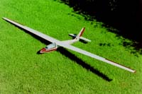

1996, Graupner Foka 4 with 2,2 m wing span, flying so bad which make it an interesting challenge.
The plan was to get an smaller acro capable model with the Foka building kit. A smaller model for the reason, weight needs time to accelerate in velocity, without velocity no acro flight, that's clear.
Unfortunately I must fight for every meter in height at my favorite flight area. Sometimes this makes me nervous with the Foka since it will nose-dive in small curves.
During winter time 2004 I have build a new wing with flapperons and a slightly bigger profile depth at the wing tips. In addition I have abridge the wing tip for one degree. All this changed the flight behavior to the better side.
The construction plan for the wing I have drawn using the free Solid Edge 2D CAD program (Foka4_Fluegel.pdf).